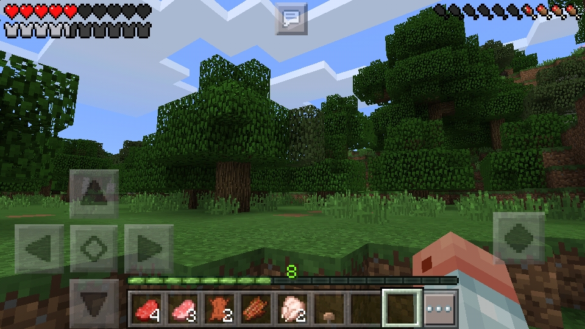

NTD VAULT
THE WEBSITE IS CURRENTLY UNDER DEVELOPMENT
[
Home
|
Archive
|
News
]
Archive
This website officially went offline in 2022 after being active for quite some time. After a long period of inactivity, it was brought back online in 2025. The purpose of this return is not to expand or change its content, but to preserve, organize, and share past projects and ideas - serving as a small archive that keeps the works and memories from earlier times.
2016
That year, I was only 7 when my cousin introduced me to a game called Minecraft.
I played it on a phone, and everything felt so strange - the weird square blocks, the deep sounds that echoed every time I touched the screen.
I wandered through that world without knowing what to do, not understanding why it turned dark or why those creatures kept attacking me.
Gradually, my cousin began teaching me how to play - how to break and place blocks, craft tools, and survive the night.
Every time I learned something new, that world seemed to grow a little bigger.
I started to feel the joy of creating something with my own hands, even if it was just a small dirt shelter.
Looking back, 2016 feels like the first doorway that opened for me - the place where I placed my very first blocks, and where my quiet love for Minecraft began to grow.

[ Last update: 2025-10-11 12:30 UTC+7:00 ]